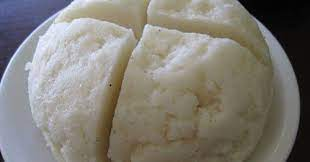

African Ugali

Description
In Kenya,Ugali is the most loved meal.
This is the list of ingredients and how it is prepared.
Ingredients
- 1/2kg Maize flour
- 2 cups of water
Procedure
- Heat the water until its starts to boil
- Add small amount of flour to the boiling water as you stir using a
cooking stick
- Add flour after stirring and again stir.
Repeat this until the ugali is hard enough.
Leave the ugali to be heated for about 1 minute.
Put your ugali in a plate.
Ugali in Kenya often accompanies vegetables,fried eggs,beef... etc